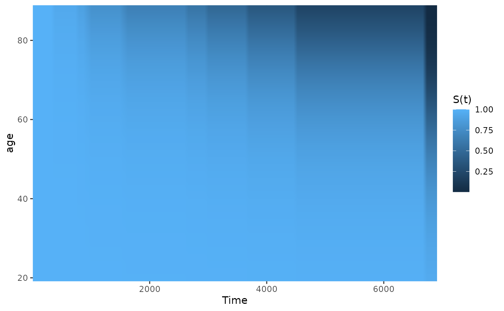
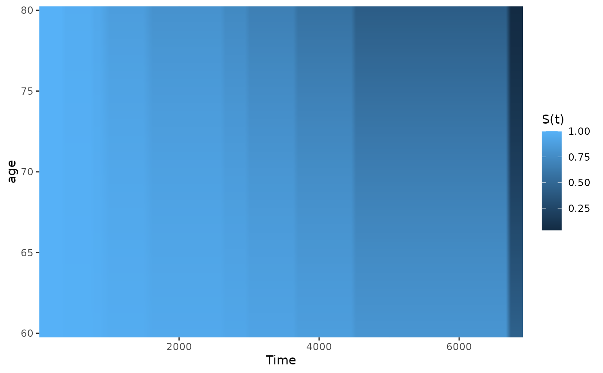
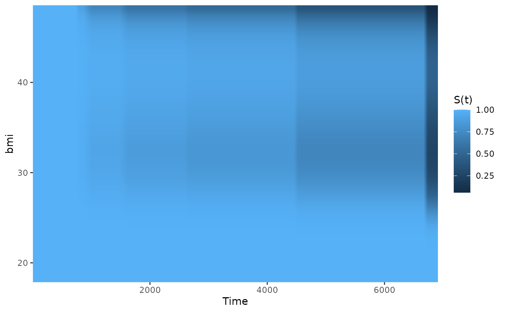
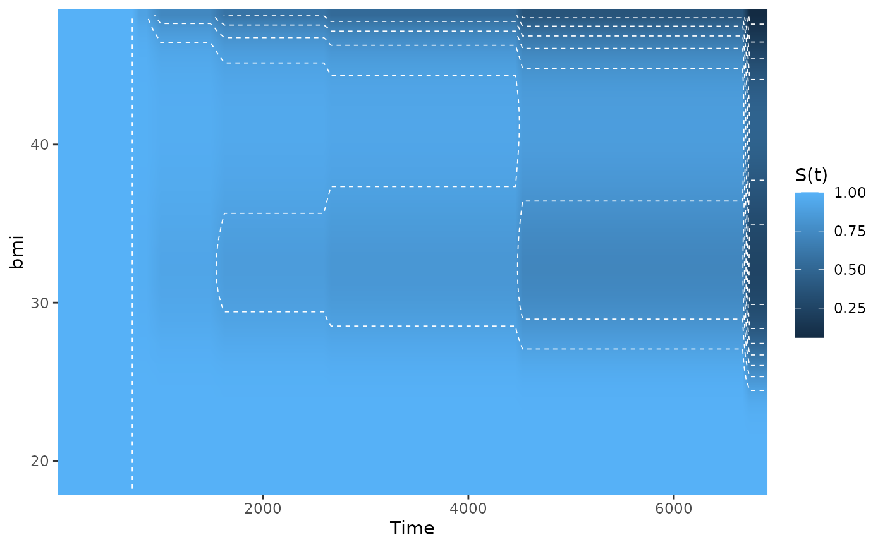

Plot a Heatmap of the Effect of a Continuous Covariate on a Time-To-Event Outcome
plot_surv_heatmap.RdUsing a previously fit time-to-event model, this function plots a heatmap with the continuous covariate on the y-axis and the time-to-event on the x-axis. The color is made in accordance with the corresponding survival probability or CIF at that point.
Usage
plot_surv_heatmap(time, status, variable, group=NULL,
data, model, cif=FALSE,
na.action=options()$na.action,
horizon=NULL, fixed_t=NULL, max_t=Inf,
start_color=NULL, end_color=NULL,
alpha=1, xlab="Time", ylab=variable,
title=NULL, subtitle=NULL,
legend.title="S(t)", legend.position="right",
gg_theme=ggplot2::theme_bw(),
facet_args=list(), panel_border=FALSE,
axis_dist=0, interpolate=TRUE,
contour_lines=FALSE, contour_color="white",
contour_size=0.3, contour_linetype="dashed",
...)Arguments
- time
A single character string specifying the time-to-event variable. Needs to be a valid column name of a numeric variable in
data.- status
A single character string specifying the status variable, indicating if a person has experienced an event or not. Needs to be a valid column name of a numeric or logical variable in
data.- variable
A single character string specifying the continuous variable of interest, for which the survival curves should be estimated. This variable has to be contained in the
data.framethat is supplied to thedataargument.- group
An optional single character string specifying a factor variable in
data. When used, the plot is created conditional on this factor variable, meaning that a facetted plot is produced with one facet for each level of the factor variable. Seecurve_contfor a detailed description of the estimation strategy. Set toNULL(default) to use no grouping variable.- data
A
data.framecontaining all required variables.- model
A model describing the time-to-event process (such as an
coxphmodel). Needs to includevariableas an independent variable. It also has to have an associatedpredictRiskmethod. See?predictRiskfor more details.- cif
Whether to plot the cumulative incidence (CIF) instead of the survival probability. If multiple failure types are present, the survival probability cannot be estimated in an unbiased way. This function will always return CIF estimates in that case.
- na.action
How missing values should be handled. Can be one of:
na.fail,na.omit,na.pass,na.excludeor a user-defined custom function. Also accepts strings of the function names. See?na.actionfor more details. By default it uses the na.action which is set in the global options by the respective user.- horizon
A numeric vector containing a range of values of
variablefor which the survival curves should be calculated orNULL(default). IfNULL, the horizon is constructed as a sequence from the lowest to the highest value observed invariablewith 40 equally spaced steps.- fixed_t
A numeric vector containing points in time at which the survival probabilities should be calculated or
NULL(default). IfNULL, the survival probability is estimated at 100 equally spaced steps from 0 to the maximum observed event time.- max_t
A number indicating the latest survival time which is to be plotted.
- start_color
The color used for the lowest value in
horizon. This and theend_colorargument can be used to specify custom continuous color scales used in the plot. For example, if a black and white plot is desired, the user can setstart_color="white"andend_color="black". See?scale_color_gradientfor more information.- end_color
The color used for the highest value in
horizon. See argumentstart_color.- alpha
The transparency level of the plot.
- xlab
A character string used as the x-axis label of the plot.
- ylab
A character string used as the y-axis label of the plot.
- title
A character string used as the title of the plot.
- subtitle
A character string used as the subtitle of the plot.
- legend.title
A character string used as the legend title of the plot.
- legend.position
Where to put the legend. See
?themefor more details.- gg_theme
A ggplot2 theme which is applied to the plot.
- facet_args
A named list of arguments that are passed to the
facet_wrapfunction call when creating a plot separated by groups. Ignored ifgroup=NULL. Any argument except thefacetsargument of thefacet_wrapfunction can be used. For example, if the user wants to allow free y-scales, this argument could be set tolist(scales="free_y").- panel_border
Whether to draw a border around the heatmap or not. Is set to FALSE by default to mimic standard heatmaps.
- axis_dist
The distance of the axis ticks to the colored heatmap. Is set to 0 by default to mimic standard heatmaps.
- interpolate
Whether to linearly interpolate the colors or not. Set to
TRUEby default, which results in a smooth surface being plotted. Corresponds to theinterpolateargument in thegeom_rasterfunction, which is used internally.- contour_lines
Whether to add some contour lines to the heatmap. To get a proper contour plot, use the
plot_surv_contourfunction instead.- contour_color
The color of the contour lines. Defaults to
"white". Ignored ifcontour_lines=FALSE.- contour_size
The size of the contour lines. Ignored if
contour_lines=FALSE.- contour_linetype
The linetype of the contour lines. Defaults to
"dashed". Ignored ifcontour_lines=FALSE.- ...
Further arguments passed to
curve_cont.
Details
Heatmaps are a great tool to visualize a three dimensional surface in a two-dimensional plot. A continuous color scale is used to represent the probability of interest. Although this is fine theoretically, it is often hard to read specific information off these plots. Contour lines can be added to the plot in order to make this easier by using contour_lines=TRUE in the function call.
In most cases, however, it is probably better to use a proper contour plot instead, which can be produced using the plot_surv_contour function. This is mostly a matter of taste, which is why both types of plots are included in this package. Another alternative is the to use the plot_surv_matrix function, which is basically a discretized version of a survival heatmap.
The main advantage of the heatmap and the contour plots is that they can visualize the effect of a continuous covariate regardless of how it was modeled. Non-linear relationships can be visualized just as well as linear ones. The major downside is, that the structure of the plot is not the same as that of a standard Kaplan-Meier plot. An alternative that is closer to the standard plot can be created using the plot_surv_area function.
Examples
library(contsurvplot)
library(riskRegression)
library(survival)
library(ggplot2)
library(splines)
# using data from the survival package
data(nafld, package="survival")
# take a random sample to keep example fast
set.seed(42)
nafld1 <- nafld1[sample(nrow(nafld1), 150), ]
# fit cox-model with age
model <- coxph(Surv(futime, status) ~ age, data=nafld1, x=TRUE)
# plot effect of age on survival using defaults
plot_surv_heatmap(time="futime",
status="status",
variable="age",
data=nafld1,
model=model)

# plot it only for 60 to 80 year old people
plot_surv_heatmap(time="futime",
status="status",
variable="age",
data=nafld1,
model=model,
horizon=seq(60, 80, 0.5))

## showing non-linear effects
# fit cox-model with bmi modelled using B-Splines,
# adjusting for age and sex
model2 <- coxph(Surv(futime, status) ~ age + male + bs(bmi, df=3),
data=nafld1, x=TRUE)
# plot effect of bmi on survival using defaults
plot_surv_heatmap(time="futime",
status="status",
variable="bmi",
data=nafld1,
model=model2)

# plot effect of bmi on survival with contour lines
plot_surv_heatmap(time="futime",
status="status",
variable="bmi",
data=nafld1,
model=model2,
contour_lines=TRUE)
